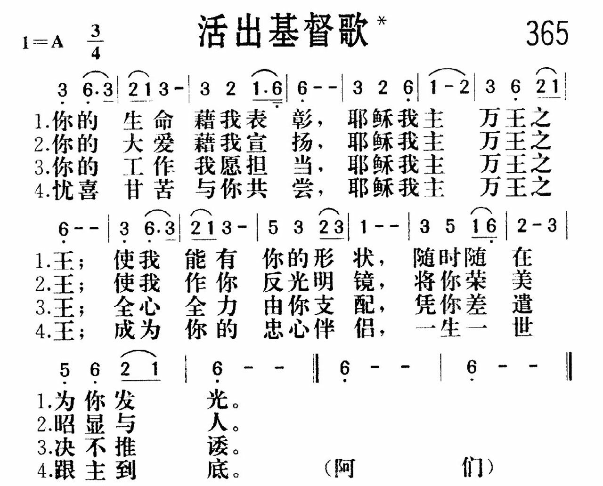

(請點耳機收聽)
(請點耳機收聽)這首詩歌是廿世紀女詩人梅詩蕙（Mary E. Maxwell）所作，由吉波絲（Ada Rose Gibbs, 1865-1905）譜曲，後經莊遜（Norman E. Johnson, 1928-1983）改編。
1650 活出基督歌 Living Out Christ (May Thy Divine Life) 焦維真
|
詩集：新編讚美詩，365 |
|
你的生命藉我表彰，耶穌我主萬王之王， 使我能有你的形狀，隨時隨在為你發光。 你的大愛藉我宣揚，耶穌我主萬王之王， 使我作你反光明鏡，將你榮美昭顯與人。 你的工作我願擔當，耶穌我主萬王之王， 全心全力由你支配，憑你差遣決不推諉。 憂喜甘苦與你共嘗，耶穌我主萬王之王， 成為你的忠心伴侶，一生一世跟主到底。阿們！
|
|
|
 |
|
| 活出基督-707颂赞诗歌 http://pt.fuyinchina.com/m/view.php?aid=4184 | |
http://www.hymncompanions.org/Jan/27/stream.php
流通管子
Channels Only
寶貴救主我讚美祢，祢慈愛已覆庇我，
拯救潔淨，又充滿我，成為祢恩典管子。
我要見證祢拯救我，使我脫罪得自由，
祢買贖我永遠屬祢，求主進入充滿我。
求主差遣聖靈充滿，使人心都歸降祢，
生命活水永遠長流，從內心湧流不止。
我先倒空等主充滿，成為主潔淨器皿，
我無力量，惟靠恩主，所賜下恩典命令。
（副歌）
主啊，我願成為管子，藉我流露主恩典；
求主大能向我湧流 使用我，每時每天。
(請點耳機收聽)
這首詩歌是廿世紀女詩人梅詩蕙（Mary E. Maxwell）所作，由吉波絲（Ada Rose Gibbs, 1865-1905）譜曲，後經莊遜（Norman
E. Johnson, 1928-1983）改編。
神愛祂的兒女，因此就要修剪那些點綴的枝葉，除去我們心中與神間隔的私念，等我們一無可誇謙卑下來時，祂才顯露心意，重用那些順服祂的孩子們。願我們都是神的流通管子，且能活出基督來。

有一首「活出基督歌」是焦維真傳道所作，其歌詞如下：
活出基督歌
Living
Out Christ
(May
Thy Divine Life)
祢的生命藉我表彰，耶穌我主萬王之王；
使我能有祢的形狀，隨時隨在為祢發光。
祢的大愛藉我宣揚，耶穌我主萬王之王；
使我作祢反光明鏡，將祢榮美昭顯與人。
祢的工作我願擔當，耶穌我主萬王之王；
全心全力為祢支配，憑祢差遣決不推諉。
(請點耳機收聽)
焦維真（JiaoWei-Zhen,
1884-1970）是山東省人，父親是長老。她畢業于長老會女中及金陵女子神學院後，曾在山東及東北傳道，後在東北營口創辦一聖經學院。授課之餘，她在國內及南洋各地主領培靈會。1941年，她去泰國領會時，因太平洋戰爭爆發，交通阻斷，不能回國，她就在泰國華僑教會中工作了六年。
1946年，她回國後與畢路得等人在上海江灣創辦中華神學院。1947年，又在上海創辦中國傳道人修養院，供各地來的傳道人食宿，靈修之用。
焦維真在南京時，曾和賈玉銘牧師合辦「靈光報」，她寫了不少文章及詩歌，本詩即其中的一首，也是她自己最愛唱的一首詩歌。
這首詩反映作者在與主靈交時，被主的尊貴榮耀，深恩厚愛所感動，靈�奡擖X真誠的敬拜和完全的喜樂，願再一次獻上自己，為主所用。詩的原名是「我於基督」，曲調改編自舒曼（Robert
A. Schumann, 1810-1856）的 Nachtsu”cke Opus 23, No.4。
1982年，裴慧真（Pei Hui-zhen, 1941-
）將這首詩歌改編成布依族曲調。裴慧真出生在上海一個牧師的家庭。她自小學鋼琴，並在教會參加各種聚會。1965年,
畢業於瀋陽音樂院後，她一直在貴州省藝術專科學校任教，培養了不少學生。
她的信仰虔誠，在工作中經常依靠神的帶領。她說：「我希望自己能處處效法神，榮耀神，讓別人在我身上看到神。」這首詩特別感動她，因此想用民歌曲調。她選比了一些少數民族的曲調，最後採用這首原名「好花紅」的抒情曲，保留了主旋律及風格，降低了一些高音，便於詠唱。
布依族是能歌善舞的民族，居住在貴州西南部，依山傍水，風景秀麗，男女頭上都裹著自織的格布長條帕。他們的音樂都是單聲部，音調優美，節奏上多為三拍。改編後的曲調，廣受大眾歡迎，它尤適女聲獨唱或齊唱。
中英文聖詩集參考
英文歌名 Channels
Only
生命聖詩 369
新聖詩 225
聖徒詩集 637
聖詩 146
讚美 401
青年聖歌III 83
英文歌名 Living
Out Christ
讚美詩（新編） 365
https://read01.com/oEEgoM.html#.YK428agzbIU
這首《活出基督歌》演唱者又加以改編了
這首歌的詞作者，是過世已近45年的基督女同工焦維真姊妹所作。她是我們青島即墨市人，一生奉獻給神做工，生前曾在行善時創作過不少讚美詩發表在當年的《靈光報》上，後被搜集到《聖徒心聲》詩集中。這首歌詞反映了焦姊妹在與主靈交時，被主的尊貴榮耀、深恩厚愛所感動，心靈里湧出誠實的敬拜和完全的喜樂，並願意再一次自己為主所用。這首歌詞原名叫《我於基督》，曾借用新編《讚美詩》第352首的德國級大作曲家舒曼鋼琴曲集《夜曲》作品第23號的《CANONBURY》。據說32年前中國基督教聖詩委員會在編選《讚美詩（新編）》時，考慮到這首歌詞是中國同工的創作，也該有中國的特色，最好應該配上中國曲調流行會更普及，也就產生了以《好花紅》為基調的《活出基督歌》。
這首《好花紅》基調的《活出基督歌》的曲作者，是我的上海老鄉叫裴慧真。她是瀋陽音樂學院畢業的科班出身音樂人，更是一個15歲洗禮過的虔誠基督徒。她一直生活在貴州，曾是貴州歌舞團的鋼琴伴奏師，後來成了貴州藝術學院的一個教授。當她讀到焦姊妹的這首詩後特感動，就產生了為它譜曲的願望。
裴教授生活在貴州，專業嗅覺自然會接觸到當地少數民族的民歌曲調，她想用民族曲調來詮釋這首讚美詩的情懷。但她對比了一些少數民族曲調後，發現有的挑動太大，顯不出莊嚴肅穆的崇拜感；有的裝飾音太多，不適合廣大信眾演唱，而《好花紅》又比較流行普及，所以她最終選定了《好花紅》這首布依族的調子為這首讚美詩譜曲。
但是，《好花紅》是首抒情曲子多歡快場合，也有不少像滑音的裝飾音。這不要緊。裴教授在保留了主旋基調和民族風格上發揮再創作，她去掉了一些不適應「陽春白雪」的難點，讓樸素通俗的「下里巴人」曲調更普及，在既不失掉民族風格的基礎上，她考慮到音域不能太寬適於演唱，把去高音也降了八度，又改變了歌曲的後半部分曲調，全曲的3/4、4/4、5/4節拍全部改為三拍子節奏，去掉了開頭的散板，使得《活出基督歌》難度降低，特別適應女聲獨唱或合唱，讓這首老歌大眾優美化後不失肅穆莊重氣氛，真正使好花紅民調煥發了不一樣的青春氣息。
由於《活出基督歌》好聽又好唱既描繪了主的形象的榮譽，又能唱出信眾們隨時隨在為主發光、一生一世追求主的夙願，很快就成了基督徒活動前領詩選唱、節日表演的炙手可得頻繁選用的曲子。許多基督徒或會唱這首基督讚美詩的年輕人，心懷虔誠面對耶穌，通過心裡對話的歌聲，有意無意傳播了布依族的《好花紅》，讓這個民族文化奇葩深入人心啦。
「痛飲刺梨酒，醉聽好花紅，大地唱紅遍，牢記人心中」。這是當年貴州省在宣傳布依族自己文化節時出現的一首詩句。看來目前在我國方興未艾的「信仰潮」中，基督徒在發揚和繼承我國民族文化遺產方面，有著某些主流無法替代的作用。從《活出基督歌》這首由《好花紅》嬗變普及的曲子這點上，我們應該客觀點讚它的功績才對啊。呵呵~~~
原文網址：http://read01.com/oEEgoM.html

照片中央坐著一位頭髮斑白，架著黑框眼鏡的女士，她就是焦維真姊妹1。她前半生馳騁大江南北，為主傳揚福音，晚年退居上海，原想為退休傳道人預備一處安靜之所，未料在政治跌宕中，走了一條曲折的路。
五十年代初，中國教會在無神論政權下，是否加入「三自」2成為宗教界議論的熱點。有教會加入，有教會不加入，也有教會產生激烈的內部討論。1956
年，經過逾年的角力，焦維真姊妹創辦的中國傳道人修養院，正式加入了由「三自」成立的上海靈修神學院。
身邊的人為此希奇：她不就是引導學生的院長，傳神的道給學生的老師嗎？焦姊妹當年的抉擇，至今仍是個未解的結。希伯來書十三章7 至8
節說：「從前引導你們，傳神之道給你們的人，你們要想念他們，效法他們的信心，留心看他們為人的結局。耶穌基督昨日、今日、一直到永遠，是一樣的。」
想念她的傳道
焦維真姊妹是山東人，父親是教會長老，少時就讀教會女子中學。十六歲那年遇上庚子拳亂，拳民殺西教士，也殺「二鬼子」3，信徒疲於逃命，甚至有整個村莊給燒毀的。焦姊妹自女中畢業即轉到煙台師範學校，後來入讀南京金陵神學女校，畢業後，留校任教。
二十年代，她致力佈道工作， 走遍高麗， 青島、上海、廣州、汕頭、廈門、福建等地，向數萬人傳福音，也曾參加中華國內佈道團和伯特利佈道團的服侍。
1935 年， 她應邀往東北，在遼寧營口第一屆東北基督徒培靈會中服侍，後留下作老師。據說她曾任營口聖經學院院長，惟翻查資料，卻未有確據。4
其後她回到上海，又輾轉到泰國的華僑教會服侍，只因太平洋戰事蔓延，交通受阻而被迫留下，在當地停留了六年。
1946
年終得回國的焦姊妹已是六十二歲，剛巧中華女子神學院復校而獲聘任老師。那時慕名而來的青年人很多，也有從東北跟她來的。學院後因收的多是男生，遂改名為中華神學院，全院學生達八十多人。
曾是焦姊妹學生的弟兄說：「焦老師上課，除了知識，也分享個人的生命經歷。記得一次她說到剛出來傳道時，也像一般姊妹喜好時尚衣服，但女傳道的衣著都是白褂黑裙，加白襪黑鞋。她看見漂亮的衣料就禱告求問神，神回應她說：
『這不合你。』她順服下來，只選那素色的。」他更說她上課和講道都很誠懇，語調堅定，用字清晰，很叫聽的人受感動。
想念她的領受
1947
年，焦姊妹有一個新的領受——創辦中國傳道人修養院。修養院是為照顧年老無依的退休傳道人，特別是終身守童身的女傳道，讓她們在那裡得到休養和治療。修養院的英文名稱是China
Christian Worker's
Home，最能表達這心意。其開辦經費全憑信心，由信徒奉獻，地址就在中華神學院附近。焦姊妹分享說：「院子的一切，從地皮、房子到一桌一椅，都是從禱告中得來的，是神在當中供應所需。」
1950年，中華神學院停辦，學生都轉到修養院去，修養院才加上造就傳道人的內容，但不像神學院般教授，只有查經和祈禱，學生要自己追求，老師在旁指導。有弟兄回憶說：「焦老師就像我們的屬靈母親一樣，她沒有結婚，一生的時光都用在事奉主的事上，卻有著無數屬靈兒女。」
1954
年前，修養院就像街角的小房子般，沒引起政府很大的注意，但隨著政治的風愈吹愈熾，宗教局也來探訪，邀請他們加入「三自」。起初他們拒絕了，但逼迫接踵而來。老師被強迫隔離，幹部就花言巧語叫學生相信政府是愛護關心他們的，跟著是威逼恐嚇，警告學生若繼續跟著老師，必被新社會棄絕，結局就只有死亡。沒幾天，學生的態度大大改變，思想單純的開始敵視老師，靈命成熟的也逐漸疏遠。修養院的氣氛變得很緊張，有老師被關進圖書館裡，要求自我檢討。焦姊妹則被隔離到女生宿舍的一個小房間，要求她坦白交代自己的罪行。不久，傳出焦姊妹寫了坦白書，承認是帝國主義宣教士所派來的特務分子，並供出被關的老師也是一伙。情況急轉直下，老師遭受幹部竭力恐嚇，學生更被煽動指控老師的言論和罪行。
想念她的終局
1956
年，焦姊妹已經七十二歲了，經宗教局安排，修養院和賈玉銘牧師的上海靈修院連同另外兩個福音機構，被合併成為上海靈修神學院，賈牧師為院長，她是副院長。那時候，她是否抓不住對主的信心，跌倒了呢？
焦姊妹晚年得了癌症，搬到親戚家休養，她忍受著疾病，從不向人訴苦，有人探望，也歡顏相見。1971
年，焦姊妹安息主懷，在世寄居八十七載。我們不知道她的信心如何，也看不清她的終局。在那波瀾洶湧的歲月，著實有太多的軟弱和剛強映照在我們面前，叫人眼目紛擾。但主只告訴我們一件事，祂說：「耶穌基督昨日、今日、一直到永遠，是一樣的。」（來十三8）
惟有回到不變的主那裡，我們才能面對多變的世局。
（作者是堂會牧師，盼藉早期屬靈人的生命見證，勉勵信徒。）
註釋：
1. 焦維真姊妹在1884年出生。
2. 「三自」全名是基督教三自愛國運動委員會。
3. 「二鬼子」是山東人對信主中國信徒的貶稱。
4. 營口聖經學院於1930年由愛爾蘭宣教士創立，首任院長是韓鳳岡牧師。兩年後，滿州國成立，由英國西教士康慕恩牧師（James McCommon）續任院長。直到1940年，因二次大戰，英日關係緊張，康牧師回國，由美國宣教士魏司道牧師（J.
G. Vos）接任。到年底因受戰爭影響，就停學了。翌年春，復課不到半年，學校因不接受朝拜天皇要求，被文教部封殺，魏牧師迫得回國。
https://www.ccmhk.org.hk/bimonthly/view?id=869

https://www.gushiciku.cn/dc_tw/201157634
生命季刊微信專稿
音訊為曉徐姐妹朗讀：
https://www.gushiciku.cn/dc_tw/201157634


https://www.ruten.com.tw/item/show?21632291374415
https://zh.wikipedia.org/wiki/%E5%B8%83%E4%BE%9D%E6%97%8F